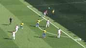

COMO FUE EVOLUCIONANDO
El fútbol en Colombia evolucionó desde sus inicios en el siglo XX, pasando de ser un deporte practicado principalmente en escuelas y clubes locales a una pasión nacional con una liga profesional y participación en competiciones internacionales. Inicios (siglo XX): El fútbol llegó a Colombia a principios del siglo XX, inicialmente practicado en escuelas y clubes locales, como la Escuela Militar y la Liga del Atlántico. Creación de la Dimayor (1948): La División Mayor del Fútbol Colombiano (Dimayor) fue fundada en 1948, marcando el inicio del fútbol profesional en el país con el primer campeonato nacional. Primeras participaciones internacionales (1945): En 1945, Atlético Junior fue el primer equipo colombiano en participar en el Torneo Suramericano de Fútbol. Primera Copa del Mundo (1962): Colombia clasificó a su primera Copa del Mundo en 1962, después de ganar la clasificación en Lima. En 2001, Colombia organizó la XL Copa América, ganándola de forma invicta y sin recibir goles en contra. La final disputada en Bogotá le dio a Colombia, dirigida de nuevo por Francisco Maturana, el triunfo 1-0 sobre México. Esto generó la oportunidad a la selección de jugar la Copa Confederaciones 2003, torneo en el que finalizó cuarta tras caer con Turquía. En cuanto a lo trascurrido del siglo XXI, Colombia se ausentó de la Copa Mundial de Fútbol en las ediciones 2002, 2006 y 2010. Entretanto, en la Copa América, la más reciente actuación destacada fue en Perú 2004 ocupando el cuarto lugar, y el tercer lugar obtenido en la Copa América Centenario 2016, disputada en Estados Unidos. Sin embargo, luego de 16 años de ausencia, Colombia regresó a la Copa Mundial de Fútbol tras cosechar una muy buena eliminatoria gracias a una nueva generación de futbolistas encabezada por el goleador Radamel Falcao García.
En el Mundial Brasil 2014, el equipo dirigido por José Pekerman alcanzó los cuartos de final cayendo derrotados por Brasil en un partido que terminó 2-1, logrando su mejor participación en la historia, y catapultó a James Rodríguez como máximo goleador (Bota de Oro) del certamen con seis anotaciones. Así mismo en 2018 logró su sexta clasificación a un mundial, en este torneo se quedó en octavos de final, siendo eliminada por Inglaterra en tanda de penales. Desde 2006 juega en el Sudamericano Femenino Sub-20, quedando segunda tanto en 2010 (donde fueron anfitrionas en la ciudad de Bucaramanga) como en 2022, clasificando al Mundial Sub-20 de 2010 donde llegaría a las semifinales y al Mundial Sub-20 de 2022, respectivamente. En 2016, Colombia disputó dos jornadas más de la Eliminatoria antes de jugar en Estados Unidos la edición especial de la Copa América, que por primera vez se celebró en un territorio diferente a Suramérica, enfrentando además de los equipos de la Conmebol a los seis mejores de la Concacaf.[36] Para las fechas 5 y 6 de la Eliminatoria, la selección obtuvo 2 victorias consecutivas ante Bolivia en La Paz y Ecuador (hasta ese momento líder de la Eliminatoria) en condición de local, que lo dejarían en puestos de clasificación directa al próximo Mundial. En la Copa América Centenario terminó en el tercer lugar, esto tras vencer a Estados Unidos en el partido por el tercer puesto. Posteriormente, en la reanudación de la Eliminatoria al Mundial 2018, Colombia jugó 6 jornadas más, donde obtendría resultados que los dejaban parcialmente por fuera de la cita orbital. En 2017, la Eliminatoria Sudamericana entraba en su parte final, el seleccionado colombiano debía sumar la mayor cantidad de puntos para conseguir el boleto directo al Mundial de Rusia. En las fechas 13 y 14, obtuvo 2 triunfos consecutivos que lo devolvieron a los puestos de clasificación, esto tras superar agónicamente a Bolivia en Barranquilla y vencer a Ecuador de visitante en Quito. A pesar de estos triunfos, en las últimas 4 jornadas Colombia entró en una racha sin triunfos, en la que empató 3 de sus últimos 4 juegos, uno de ellos ante Brasil de local en Barranquilla; perdería ante Paraguay en los últimos minutos también de local, lo que obligaba al equipo colombiano a sumar en la última fecha ante Perú en condición de visitante para no depender de los resultados de los otros partidos que se definían en simultáneo; finalmente, el combinado cafetero empató 1-1 en Lima y clasificó a su sexto mundial y segundo consecutivo después de Brasil 2014 en la cuarta posición con 27 unidades.[37] En la cita orbital llegó hasta la ronda de octavos de final, siendo eliminada por Inglaterra desde los lanzamientos del punto penal, luego de un polémico arbitraje del estadounidense Mark Geiger invalidando un gol legítimo de Carlos Bacca en tiempo extra. Tras su participación en el mundial y luego de varias reuniones con los directivos de la FCF, Pékerman anuncia el fin de su ciclo al frente de la selección.[